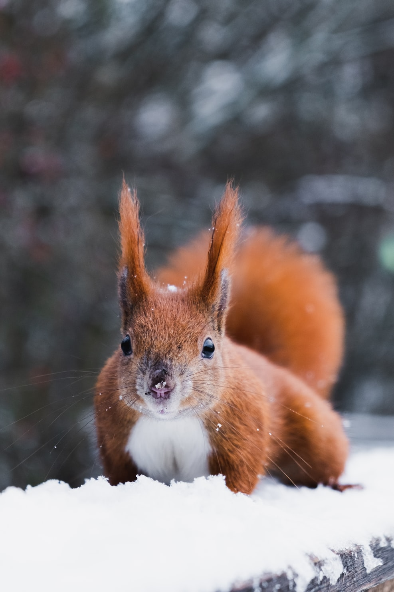

 Al igual que otros roedores, los cuatro dientes frontales de las ardillas nunca dejan de crecer, por lo que no se desgastan. Las ardillas de los árboles son las más conocidas. Suelen verse correteando con mucha gracia y saltando de rama en rama. Otras ardillas viven en madrigueras o túneles, donde algunas hibernan. Este tipo de ardillas “de suelo” comen frutos secos, hojas, raíces, semillas y otras plantas. También pueden atrapar y comer animales pequeños, como insectos u orugas. Estos pequeños mamíferos tienen que estar siempre en guardia, pues para algunos depredadores son exquisitos bocados con pocas defensas naturales, salvo las ardillas voladoras. A veces hay grupos de ardillas “de suelo” que trabajan juntas para protegerse y advertirse con una especie de silbido cuando sienten que el peligro les acecha.
Las ardillas de los árboles se pueden encontrar en bosques y también en parques de las ciudades. A pesar de ser expertas escaladoras, suelen bajar al suelo para buscar alimento como frutos secos, bellotas, bayas y flores. También comen corteza, huevos o pájaros pequeños. La savia de los árboles es un manjar delicioso para algunas especies.
Las ardillas voladoras constituyen un tercer tipo de ardillas. Tienen un estilo de vida parecido al de los pájaros, viviendo en nidos o huecos de los árboles. Aunque no vuelan realmente, sí que planean en el cielo. Abren sus patas y se deslizan de árbol en árbol. La piel que une las extremidades y el cuerpo hace que parezca que tienen verdaderas alas. Estos “saltos” que les hacen planear en el aire pueden superar los 46 metros. Las ardillas voladoras comen frutos secos y frutas, pero también pueden cazar insectos e incluso pequeños pájaros. Ya vivan en árboles o madrigueras, las hembras suelen tener entre dos y ocho crías. Éstas son ciegas y completamente dependientes de sus madres durante dos o tres meses. Las hembras pueden tener varias camadas al año, por lo que es una población abundante.